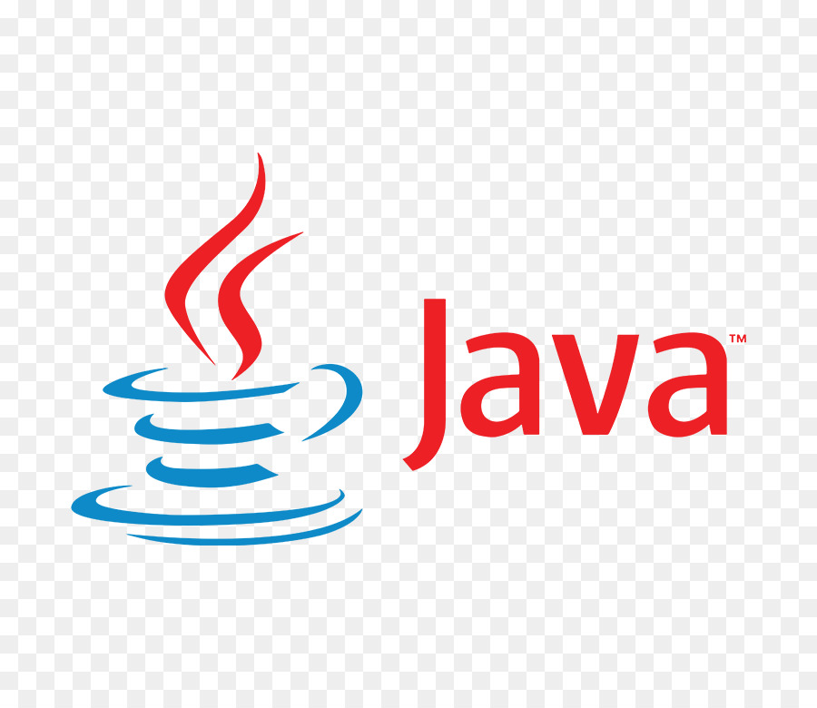

CODE LIBRARY
Here in code library,you can learn about the basics of some famous programming languages.
To know more about each langauge,links for respective resourses are provided.


CODE LIBRARY
Here in code library,you can learn about the basics of some famous programming languages.
To know more about each langauge,links for respective resourses are provided.
Top 5 famous programming languages are:
1.JavaScript

JavaScript is a dynamic computer programming language. It is lightweight and most commonly used as a part of web pages, whose implementations allow client - side script to interact with the user and make dynamic pages. It is an interpreted programming language with object-oriented capabilities.JavaScript was first known as LiveScript, but Netscape changed its name to JavaScript, possibly because of the excitement being generated by Java. JavaScript made its first appearance in Netscape 2.0 in 1995 with the name LiveScript. The general-purpose core of the language has been embedded in Netscape, Internet Explorer, and other web browsers.
For more information:Click Here
Link for online editor:Click Here2.Python

Python is a general-purpose interpreted, interactive, object-oriented, and high-level programming language. It was created by Guido van Rossum during 1985- 1990. Like Perl, Python source code is also available under the GNU General Public License (GPL). This tutorial gives enough understanding on Python programming language.Python is a high-level, interpreted, interactive and object-oriented scripting language. Python is designed to be highly readable. It uses English keywords frequently where as other languages use punctuation, and it has fewer syntactical constructions than other languages.
For more information:Click Here
Link for online compiler:Click Here3.Java

Java is a high-level programming language originally developed by Sun Microsystems and released in 1995. Java runs on a variety of platforms, such as Windows, Mac OS, and the various versions of UNIX.Java is a MUST for students and working professionals to become a great Software Engineer specially when they are working in Software Development Domain.
For more information:Click Here
Link for online IDE:Click Here4.C++

C++ is a high-level, general-purpose programming language created by Bjarne Stroustrup as an extension of the C programming language, or "C with Classes". The language has expanded significantly over time, and modern C++ has object-oriented, generic, and functional features in addition to facilities for low-level memory manipulation. It is almost always implemented as a compiled language, and many vendors provide C++ compilers, including the Free Software Foundation, LLVM, Microsoft, Intel, Oracle, and IBM, so it is available on many platforms.
For more information:Click Here
Link for online compiler:Click Here5.PHP

The PHP Hypertext Preprocessor (PHP) is a programming language that allows web developers to create dynamic content that interacts with databases. PHP is basically used for developing web based software applications.PHP started out as a small open source project that evolved as more and more people found out how useful it was. Rasmus Lerdorf unleashed the first version of PHP way back in 1994. PHP is a MUST for students and working professionals to become a great Software Engineer specially when they are working in Web Development Domain.
For more information:Click Here
Link for online editor:Click Here